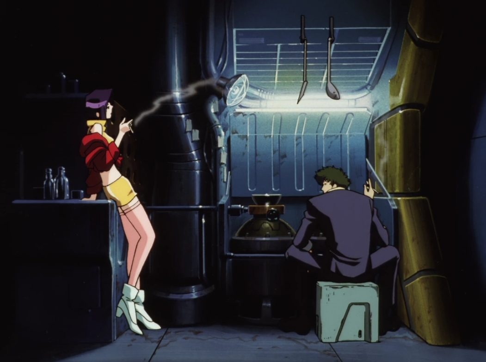

Even bounty hunters have to eat!
Here you'll usually find Jett cooking up his famous Bell Peppers and Beef (minus the beef of course). But right now it seems like Faye and Spike are using this space.
Best not to disturb them. You can find them elsewhere on the ship and talk to them when you're one on one.